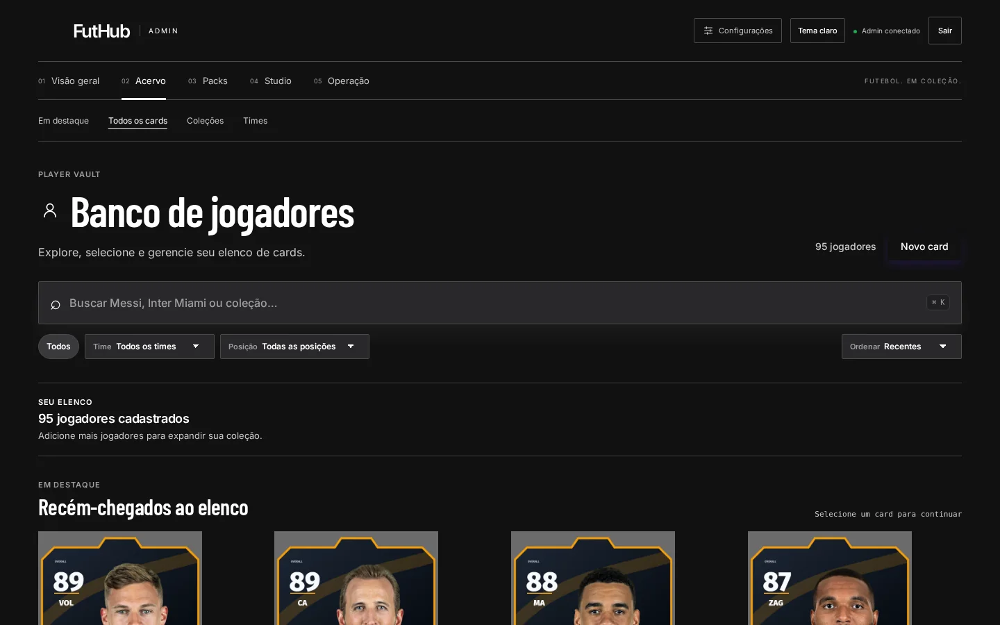
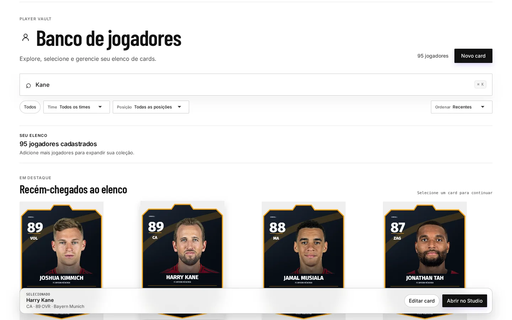
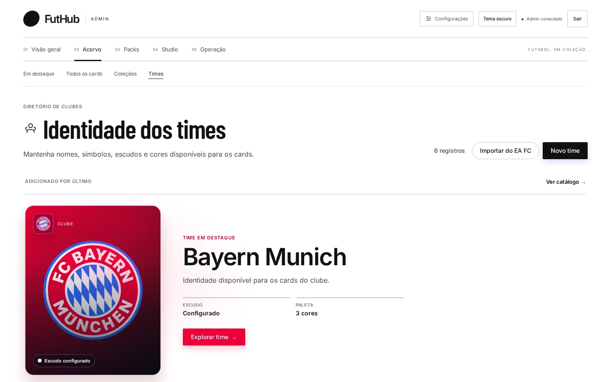
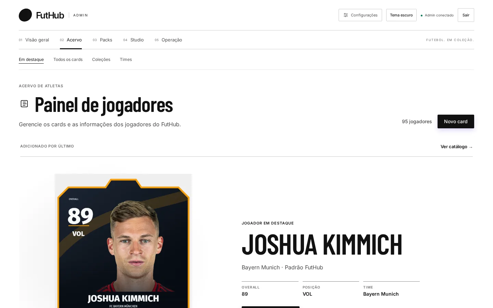
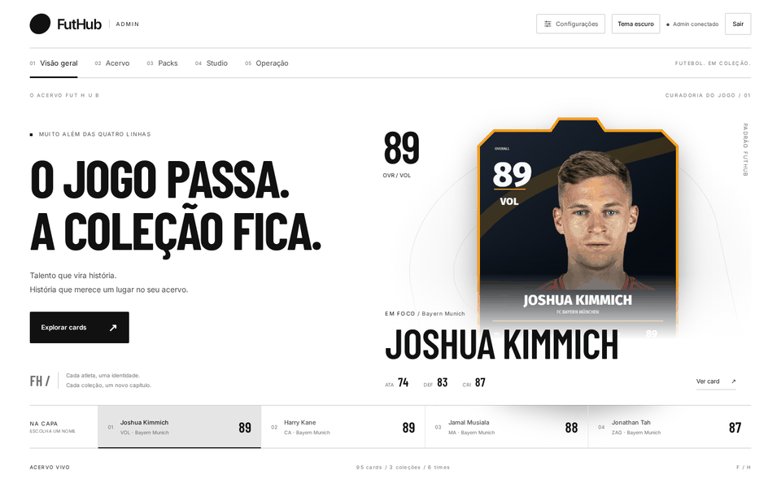

Momento mágico
Um clube inteiro em três cliques.
“Importar do EA FC” busca o clube no EA SPORTS FC 26 e traz escudo, cores, jogadores, atributos e fotos. Você revisa o elenco, desmarca quem não entra, escolhe o time e a coleção de destino e importa tudo de uma vez.

Se o clube não aparecer, dá para buscar o elenco no TheSportsDB. Escudo e cores podem vir do FootyLogos.
Banco de jogadores
Busque por nome, time ou coleção, filtre por time e posição e ordene por recentes, maior overall ou nome. Ao escolher um card, aparecem os atalhos “Editar card” e “Abrir no Studio”.
- Detalhe com gráfico radar dos atributos
- Editor com Identidade, Vínculos e Desempenho
- Corte da foto em 600 × 800 com arrastar e zoom

Identidade dos times
Nome, símbolo, escudo e paleta de cada clube ficam guardados num lugar só e alimentam todos os cards daquele time. O editor sugere logo e cores para preencher nome, slug, símbolo, paleta e escudo SVG num clique.

Coleções e edições
Uma coleção é a identidade visual de uma edição, como “Lendas”. Ela agrupa os cards e define se os contratos estão liberados ou bloqueados. O editor também sugere a arte da coleção.


